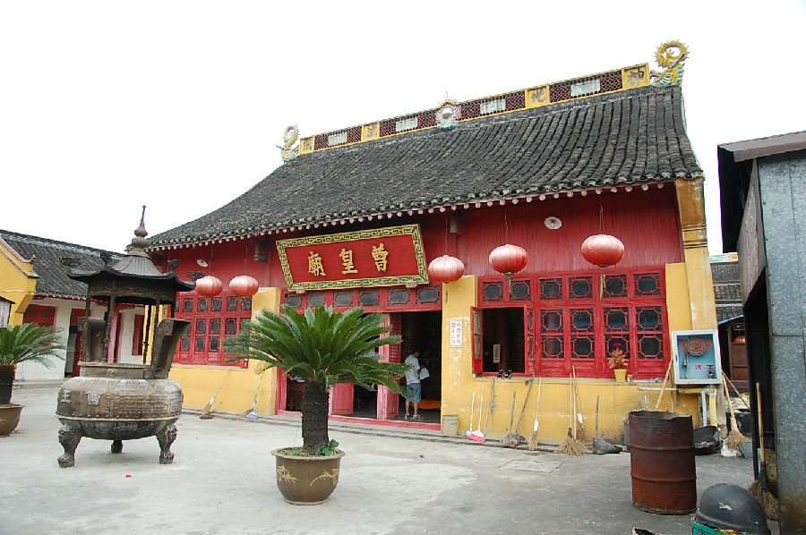

嘉兴市文物保护网 · 市级文物保护点 · 2020-11-09 · 原文

曹皇庙位于嘉兴市南湖区南湖街道烟雨社区南湖大桥北侧，沪杭铁路东侧。据史志记载，庙系推官史显卿为纪念北宋名将曹彬而建，清雍正年间里人沈见龙重建，乾隆间复修，咸丰末被毁，同治中重建，也称小曹皇庙。庙面积2547平方米，坐北朝南，砖木结构，中轴对称共三个大殿，通面阔43米，通进深59.24米。第一进为三开间平房，抬梁式九架梁，供奉着名将曹彬；第二进为二层三开间楼房，南北各设有廊道，抬梁式七架梁，其东侧搭有披房，也供奉佛像。第一、二进之间有廊道接连；第三进为新建。另外还有新建的钟楼、厢房、小殿、食堂和厨房等建筑。曹皇庙是市区仅有的古寺庙之一，历史上在本地有一定影响，现香火旺盛，对研究本地区的宗教文化具有较高的历史价值。2010年公布为嘉兴市文物保护点。